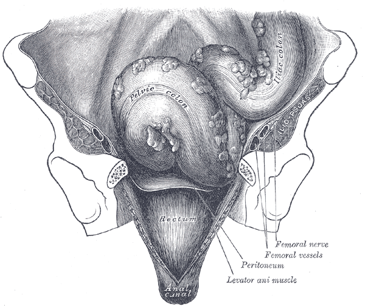
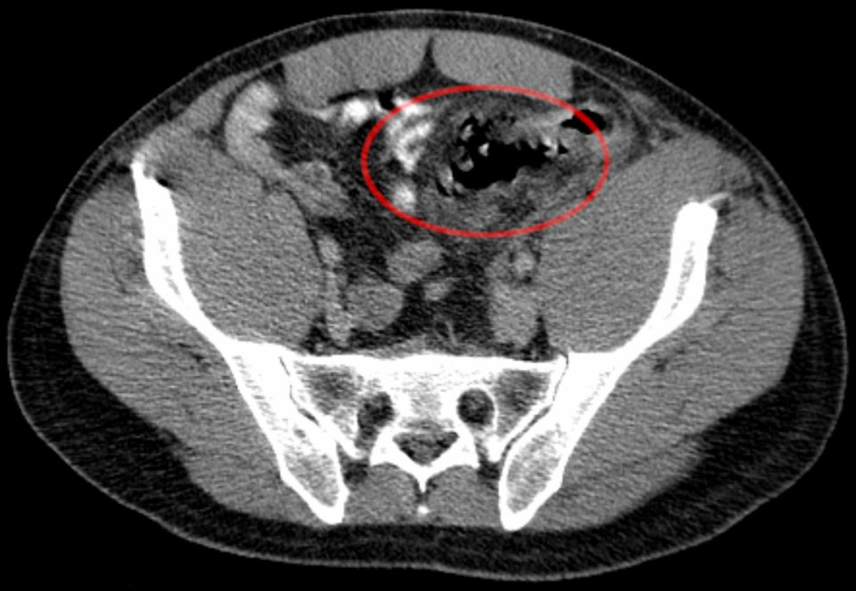
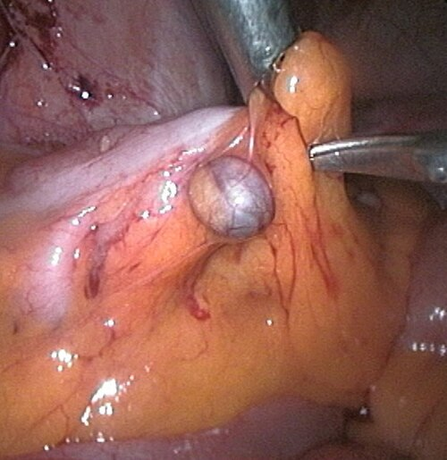
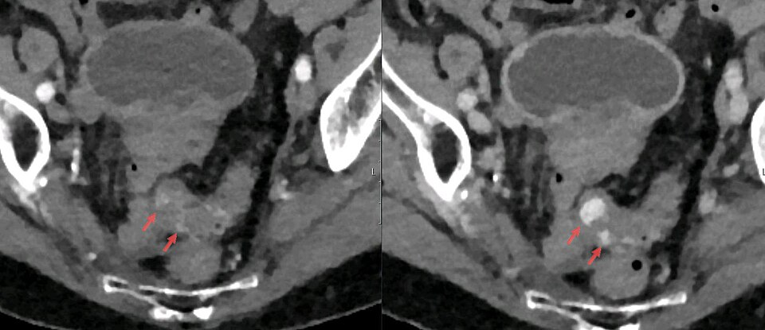

מחלות סעיפים של המעי הגס
מסעיפים שקטים ועד נקב ודימום: מיון לפי חומרה, טיפול לא ניתוחי, מתי מנתחים ואיך
בסוף המפגש תדעו
- להבדיל בין סעיפים (diverticulosis), דלקת סעיפים ודימום מסעיף ולהסביר איך נוצרים סעיפים
- לאבחן דלקת סעיפים ולמיין אותה לפי Hinchey המתוקן
- לטפל בדלקת לא מסובכת: בבית, אנטיביוטיקה רק כשצריך ומתי קולונוסקופיה
- להכיר את הסיבוכים: מורסה, פיסטולה, היצרות ונקב ואת אפשרויות הניתוח בכל אחד
- להחליט עם המטופל על ניתוח מתוכנן לפי איכות החיים ולא לפי מספר ההתקפים
- לגשת לדימום מסיבי מסעיף: קולונוסקופיה, CTA, אמבוליזציה ומתי ניתוח
מה זה סעיף ומה זו "מחלת סעיפים"
- סעיף: כיס קטן שבולט מדופן המעי
- סעיף אמיתי: כל שכבות הדופן. נדיר ובדרך כלל מולד
- סעיף "כוזב" (פסאודו-סעיף): רק mucosa ו-muscularis mucosae שבולטים החוצה. כמעט כל הסעיפים ב-colon הם כאלה
- מחלת סעיפים: כל הקשת של מה שסעיפים עושים: דלקת, סיבוכים ודימום
שכיח מאוד ובדרך כלל שקט
- מזיק: תזונה מערבית (בשר אדום, שומן, דגנים מעובדים), השמנה מרכזית, עישון
- מגן: סיבים, פירות, ירקות ודגנים מלאים, פעילות גופנית כמו ריצה
- לא מזיק: אגוזים, גרעינים ופופקורן. אין צורך לאסור
- מחקר EPIC: בצמחונים סיכון נמוך ב-31% לאשפוז או מוות מהמחלה ובצריכה הגבוהה של סיבים נמוך ב-41%
איפה נוצרים סעיפים ולמה זה חשוב בניתוח

👆 לחצו על אזור בציור כדי לקרוא עליו
יחד עם ה-sigmoid, המקום הטיפוסי לסעיפים. לא צריך לכרות את כל הסעיפים: השוליים הקרובים נקבעים במעי רך וגמיש
האתר השכיח. שריר מעובה, חלל צר ולחץ גבוה. הסעיפים יוצאים בצד המזנטרי, במקום שבו כלי הדם חוצים את השריר. לכן רוב הנקבים נתחמים ב-mesentery
שכבת שריר נוספת ולכן כמעט אין בו סעיפים. ההשקה הרחוקה תמיד ל-upper rectum: שארית sigmoid מעלה את הסיכון לחזרה
מסעיף שקט לדלקת
"אפנדיציט של צד שמאל"
- כאב בבטן שמאלית תחתונה, שם נמצא ה-sigmoid
- חום, שינוי ביציאות, חוסר תיאבון. דחיפות במתן שתן כשה-bladder מגורה
- בבדיקה: רגישות ממוקדת, לעיתים תפיחות קלה. פלגמון גדול: גוש רגיש במישוש
- מעבדה: לויקוציטוזיס ומדדי דלקת מוגברים

CT: לאשר, לשלול ולמיין
- צילום בטן בעמידה ובשכיבה: חסימה או אוויר חופשי, אבל לא ספציפי
- אולטרסאונד, MRI וחוקן ניגוד שימשו, אבל CT הוא הכלי העיקרי: מאשר, שולל אבחנות אחרות וקובע חומרה
- סימנים ב-CT: סעיפים, עיבוי דופן המעי, הסננה של השומן סביב המעי, מורסה
- CT גם מאתר מורסות ופיסטולות ומראה את היקף המחלה
- קולונוסקופיה בזמן ההתקף: בזהירות. ניפוח המעי עלול להחמיר נקב

Hinchey המתוקן
רוב המטופלים הולכים הביתה
- הטיפול מותאם לחומרה. רובם מטופלים במרפאה: בטוח וחוסך, עם מעט אשפוזים חוזרים
- משככי כאבים, נוזלים צלולים ואחר כך דיאטה דלת שאריות עד שהדלקת שוככת
- אנטיביוטיקה: סקירה ומטא-אנליזה לא הראו שהיא מקצרת החלמה או מונעת סיבוכים וניתוח. חלק מהרופאים כבר לא נותנים
- לעומת זאת, ניתוח דחוף בדלקת סעיפים מגיע לשיעור סיבוכים של עד 40%. לכן מתחילים בלי ניתוח
לא סופרים התקפים
- פעם המליצו לנתח לפי מספר ההתקפים. היום: ההתקפים החוזרים בדרך כלל דומים בחומרתם להתקף הראשון ולכן המספר לבד אינו סיבה לנתח
- גיל צעיר (מתחת ל-50) אינו סיבה: יותר חזרות, אבל לא יותר ניתוחים דחופים. ההנחיות לא מבדילות
- ניתוח מתוכנן הוא לא בלי מחיר: זיהום, דימום, פגיעה באיברים סמוכים ואפילו סטומה קבועה
- מחקר DIRECT: כריתת סיגמה שיפרה את איכות החיים במי שסובל מהתקפים חוזרים או מתלונות מתמשכות. כמעט חצי מהמטופלים השמרניים נותחו בסוף
מורסה, פיסטולה, היצרות
- קטנה: אנטיביוטיקה לבד בדרך כלל מספיקה
- גדולה: ניקוז מלעורי
- אחרי ההחלמה: יותר חזרות וסיבוכים. ההנחיות האמריקאיות (ASCRS): לשקול כריתה מתוכננת
- לא מתנקזת ולא משתפרת: ניתוח דחוף
- השכיחה: ל-bladder, בעיקר בגברים. דלקות שתן חוזרות, אוויר וצואה בשתן
- ל-vagina: כמעט רק אחרי כריתת רחם
- לעור: במקום ניקוז קודם
- בדרך כלל לא דחוף: אנטיביוטיקה, קולונוסקופיה וציסטוסקופיה (לשלול גידול וקרוהן), אחר כך כריתה והשקה. פיסטולה ל-bladder: קטטר 7–10 ימים
- פיברוזיס אחרי התקפים חוזרים: חסימה חלקית ותסמינים מתגנבים
- זונדה, אנטיביוטיקה, נוזלים וצום. אם נפתר: כריתה מתוכננת
- לפני כן: קולונוסקופיה לשלול גידול. לא עוברים? קולונוגרפיה וירטואלית או חוקן ניגוד
- חסימה מלאה שלא מגיבה: ניתוח דחוף
פריטוניטיס: מה עושים בחדר הניתוח
- Hinchey III ו-IV הם חירום: החייאה ואז ניתוח לשליטה במקור ולשטיפה
- Hartmann: כריתה וקולוסטומיה. החזרת הרציפות היא ניתוח גדול נוסף ועד 50% לא עוברים אותו לעולם
- כריתה והשקה ראשונית (עם או בלי אילאוסטומיה מסיטה): ב-DIVERTI וב-LADIES-DIVA פחות סטומות קבועות, פחות סיבוכים וניתוחים חוזרים ופחות בקעים
- שטיפה לפרוסקופית בלי כריתה (בעיקר III): פחות סטומות, אבל חזרה של המחלה פי 6 בערך. LOLA נעצר מוקדם בגלל סיבוכים
- בקרת נזקים: כריתה, בטן פתוחה וחזרה אחרי 24–48 שעות להחליט על השקה
כריתת סיגמה: שלושה כללים
- שוליים קרובים: במעי רך וגמיש. לא צריך לכרות את כל הסעיפים
- שוליים רחוקים: ב-upper rectum. שארית sigmoid מעלה את הסיכון לחזרה
- השקה ראשונית של מעי בריא. הגישה: פתוחה, לפרוסקופית, בסיוע יד או רובוטית
- זעיר-פולשני: חזרה מהירה יותר של פעילות המעי, פחות כאב, אשפוז קצר
- סטנטים ב-ureters: לפי המקרה, כמדריך בתוך רקמה דלקתית

ימין, מדוכאי חיסון וצעירים
דם טרי רב, בלי כאב

מחקרים שכדאי להכיר
90 מטופלים בפינלנד עם דלקת חוזרת, מסובכת או כאב מתמשך. אחרי 6 חודשים איכות החיים טובה יותר בניתוח (12 נקודות במדד GIQLI), אבל 10% סיבוכים קשים
Santos A et al. JAMA Surg 2021;156(2):129-3632% מהקבוצה השמרנית נותחו. חזרה: 16% בקבוצת הניתוח לעומת 92% בשמרנית. סיבוכים קשים דומים (10% לעומת 11%). מסקנה: איכות חיים נמוכה, לנתח. כמעט תקינה, אפשר להתחיל בשמרני
Santos A et al. JAMA Surg 2025;160(6):615-225 מעקבים ארוכים של מחקרים אקראיים, 499 מטופלים. שטיפה: פחות סטומה קבועה וניתוחים חוזרים, אבל יותר חזרות. בפריטוניטיס צואתית: השקה ראשונית עדיפה על Hartmann (פחות סטומות, סיבוכים ובקעים). אין הבדל בתמותה
Horesh N et al. Ann Surg 2023;278(5):e966-72113 מטופלים עם דלקת חוזרת לא מסובכת. 37% בחרו ניתוח. אחרי שנה: איכות חיים טובה יותר וחזרה ב-17% לעומת 45% במי שבחר מעקב. לא אקראי
Hawkins AT et al. Ann Surg 2026 (online ahead of print), doi:10.1097/SLA.0000000000007217חמישה דברים לקחת למחלקה
- כאב בבטן שמאלית תחתונה, חום ורגישות: לחשוב על דלקת סעיפים. דם ברקטום מכוון לאבחנה אחרת
- CT מאשר ומדרג. Hinchey III–IV הם חירום
- דלקת לא מסובכת: רובם בבית ואנטיביוטיקה לא לכולם
- ניתוח מתוכנן לפי איכות החיים והסיבוכים, לא לפי מספר ההתקפים או הגיל. השוליים הרחוקים ב-rectum
- בנקב: Hartmann כבר אינו הבחירה היחידה. השקה ראשונית מתאימה למטופל יציב